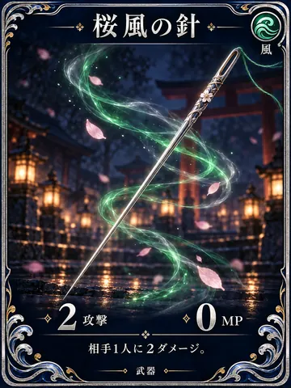
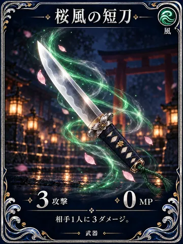
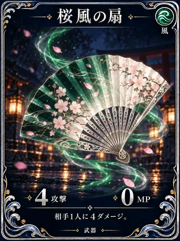
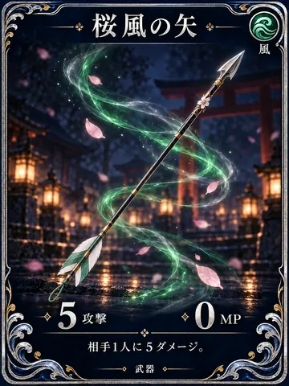
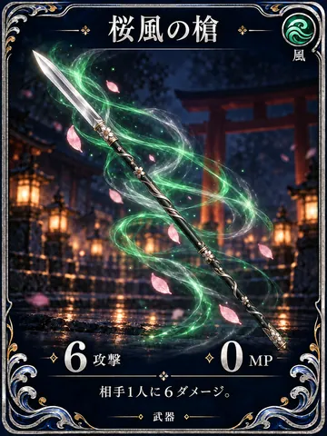

風属性 — 22枚

SK-025 · 武器桜風の針攻撃 2 · 防御 0 · MP 0
SK-026 · 武器桜風の短刀攻撃 3 · 防御 0 · MP 0
SK-027 · 武器桜風の扇攻撃 4 · 防御 0 · MP 0
SK-028 · 武器桜風の矢攻撃 5 · 防御 0 · MP 0
SK-029 · 武器桜風の槍攻撃 6 · 防御 0 · MP 0SK-030 · 武器桜風の太刀攻撃 7 · 防御 0 · MP 0SK-031 · 武器桜風の鎖攻撃 8 · 防御 0 · MP 0SK-032 · 武器桜風の大弓攻撃 9 · 防御 0 · MP 0SK-033 · 武器桜風の長刀攻撃 10 · 防御 0 · MP 0SK-034 · 武器桜風の宝剣攻撃 11 · 防御 0 · MP 0SK-035 · 武器桜風の戦斧攻撃 12 · 防御 0 · MP 0SK-036 · 武器桜風の神槍攻撃 14 · 防御 0 · MP 0SK-128 · 防具桜風の布守り攻撃 0 · 防御 2 · MP 0SK-129 · 防具桜風の袖守り攻撃 0 · 防御 3 · MP 0SK-130 · 防具桜風の籠手攻撃 0 · 防御 4 · MP 0SK-131 · 防具桜風の面頬攻撃 0 · 防御 5 · MP 0SK-132 · 防具桜風の笠攻撃 0 · 防御 6 · MP 0SK-133 · 防具桜風の胴衣攻撃 0 · 防御 7 · MP 0SK-134 · 防具桜風の羽織攻撃 0 · 防御 8 · MP 0SK-135 · 防具桜風の鎧攻撃 0 · 防御 9 · MP 0SK-136 · 防具桜風の大盾攻撃 0 · 防御 10 · MP 0SK-137 · 防具桜風の守護幕攻撃 0 · 防御 12 · MP 0雷属性 — 22枚
SK-037 · 武器紫電の針攻撃 2 · 防御 0 · MP 0SK-038 · 武器紫電の短刀攻撃 3 · 防御 0 · MP 0SK-039 · 武器紫電の扇攻撃 4 · 防御 0 · MP 0SK-040 · 武器紫電の矢攻撃 5 · 防御 0 · MP 0SK-041 · 武器紫電の槍攻撃 6 · 防御 0 · MP 0SK-042 · 武器紫電の太刀攻撃 7 · 防御 0 · MP 0SK-043 · 武器紫電の鎖攻撃 8 · 防御 0 · MP 0SK-044 · 武器紫電の大弓攻撃 9 · 防御 0 · MP 0SK-045 · 武器紫電の長刀攻撃 10 · 防御 0 · MP 0SK-046 · 武器紫電の宝剣攻撃 11 · 防御 0 · MP 0SK-047 · 武器紫電の戦斧攻撃 12 · 防御 0 · MP 0SK-048 · 武器紫電の神槍攻撃 14 · 防御 0 · MP 0SK-138 · 防具紫電の布守り攻撃 0 · 防御 2 · MP 0SK-139 · 防具紫電の袖守り攻撃 0 · 防御 3 · MP 0SK-140 · 防具紫電の籠手攻撃 0 · 防御 4 · MP 0SK-141 · 防具紫電の面頬攻撃 0 · 防御 5 · MP 0SK-142 · 防具紫電の笠攻撃 0 · 防御 6 · MP 0SK-143 · 防具紫電の胴衣攻撃 0 · 防御 7 · MP 0SK-144 · 防具紫電の羽織攻撃 0 · 防御 8 · MP 0SK-145 · 防具紫電の鎧攻撃 0 · 防御 9 · MP 0SK-146 · 防具紫電の大盾攻撃 0 · 防御 10 · MP 0SK-147 · 防具紫電の守護幕攻撃 0 · 防御 12 · MP 0 土属性 — 22枚
SK-049 · 武器山祇の針攻撃 2 · 防御 0 · MP 0SK-050 · 武器山祇の短刀攻撃 3 · 防御 0 · MP 0SK-051 · 武器山祇の扇攻撃 4 · 防御 0 · MP 0SK-052 · 武器山祇の矢攻撃 5 · 防御 0 · MP 0SK-053 · 武器山祇の槍攻撃 6 · 防御 0 · MP 0SK-054 · 武器山祇の太刀攻撃 7 · 防御 0 · MP 0SK-055 · 武器山祇の鎖攻撃 8 · 防御 0 · MP 0SK-056 · 武器山祇の大弓攻撃 9 · 防御 0 · MP 0SK-057 · 武器山祇の長刀攻撃 10 · 防御 0 · MP 0SK-058 · 武器山祇の宝剣攻撃 11 · 防御 0 · MP 0SK-059 · 武器山祇の戦斧攻撃 12 · 防御 0 · MP 0SK-060 · 武器山祇の神槍攻撃 14 · 防御 0 · MP 0SK-148 · 防具山祇の布守り攻撃 0 · 防御 2 · MP 0SK-149 · 防具山祇の袖守り攻撃 0 · 防御 3 · MP 0SK-150 · 防具山祇の籠手攻撃 0 · 防御 4 · MP 0SK-151 · 防具山祇の面頬攻撃 0 · 防御 5 · MP 0SK-152 · 防具山祇の笠攻撃 0 · 防御 6 · MP 0SK-153 · 防具山祇の胴衣攻撃 0 · 防御 7 · MP 0SK-154 · 防具山祇の羽織攻撃 0 · 防御 8 · MP 0SK-155 · 防具山祇の鎧攻撃 0 · 防御 9 · MP 0SK-156 · 防具山祇の大盾攻撃 0 · 防御 10 · MP 0SK-157 · 防具山祇の守護幕攻撃 0 · 防御 12 · MP 0 光属性 — 14枚
SK-061 · 武器暁光の針攻撃 2 · 防御 0 · MP 0SK-062 · 武器暁光の短刀攻撃 3 · 防御 0 · MP 0SK-063 · 武器暁光の扇攻撃 4 · 防御 0 · MP 0SK-064 · 武器暁光の矢攻撃 5 · 防御 0 · MP 0SK-065 · 武器暁光の槍攻撃 6 · 防御 0 · MP 0SK-066 · 武器暁光の太刀攻撃 7 · 防御 0 · MP 0SK-067 · 武器暁光の鎖攻撃 8 · 防御 0 · MP 0SK-068 · 武器暁光の大弓攻撃 9 · 防御 0 · MP 0SK-069 · 武器暁光の長刀攻撃 10 · 防御 0 · MP 0SK-070 · 武器暁光の宝剣攻撃 11 · 防御 0 · MP 0SK-071 · 武器暁光の戦斧攻撃 12 · 防御 0 · MP 0SK-072 · 武器暁光の神槍攻撃 14 · 防御 0 · MP 0SK-158 · 防具暁光の布守り攻撃 0 · 防御 2 · MP 0SK-159 · 防具暁光の袖守り攻撃 0 · 防御 3 · MP 0 闇属性 — 12枚
SK-073 · 武器宵影の針攻撃 2 · 防御 0 · MP 0SK-074 · 武器宵影の短刀攻撃 3 · 防御 0 · MP 0SK-075 · 武器宵影の扇攻撃 4 · 防御 0 · MP 0SK-076 · 武器宵影の矢攻撃 5 · 防御 0 · MP 0SK-077 · 武器宵影の槍攻撃 6 · 防御 0 · MP 0SK-078 · 武器宵影の太刀攻撃 7 · 防御 0 · MP 0SK-079 · 武器宵影の鎖攻撃 8 · 防御 0 · MP 0SK-080 · 武器宵影の大弓攻撃 9 · 防御 0 · MP 0SK-081 · 武器宵影の長刀攻撃 10 · 防御 0 · MP 0SK-082 · 武器宵影の宝剣攻撃 11 · 防御 0 · MP 0SK-083 · 武器宵影の戦斧攻撃 12 · 防御 0 · MP 0SK-084 · 武器宵影の神槍攻撃 14 · 防御 0 · MP 0 無属性 — 27枚
SK-085 · 武器先陣の破魔矢攻撃 5 · 防御 0 · MP 0SK-086 · 武器追い風の小太刀攻撃 5 · 防御 0 · MP 0SK-087 · 武器窮地の狐槍攻撃 6 · 防御 0 · MP 0SK-088 · 武器逆境の大太刀攻撃 7 · 防御 0 · MP 0SK-089 · 武器鈴音の連矢攻撃 3 · 防御 0 · MP 0SK-090 · 武器霊脈の吸刃攻撃 5 · 防御 0 · MP 0SK-091 · 武器血霞の短剣攻撃 5 · 防御 0 · MP 0SK-092 · 武器結界裂きの矢攻撃 6 · 防御 0 · MP 0SK-093 · 武器払い戻しの扇攻撃 4 · 防御 0 · MP 0SK-094 · 武器灯火の投刃攻撃 4 · 防御 0 · MP 0SK-095 · 武器霜結びの弓攻撃 5 · 防御 0 · MP 0SK-096 · 武器雷鳴の小槌攻撃 5 · 防御 0 · MP 0SK-097 · 武器風渡りの羽矢攻撃 4 · 防御 0 · MP 0SK-098 · 武器山伏の鉄杖攻撃 6 · 防御 0 · MP 0SK-099 · 武器月読みの梓弓攻撃 6 · 防御 0 · MP 0SK-100 · 武器星祭りの大弓攻撃 8 · 防御 0 · MP 0SK-101 · 武器身削りの神刀攻撃 10 · 防御 0 · MP 0SK-102 · 武器誓いの宝剣攻撃 8 · 防御 0 · MP 0SK-103 · 武器祓い清めの鎌攻撃 6 · 防御 0 · MP 0SK-104 · 武器七色の勾玉弾攻撃 5 · 防御 0 · MP 0SK-105 · 武器舞い散る桜刃攻撃 4 · 防御 0 · MP 2SK-106 · 武器旅守りの手槍攻撃 5 · 防御 0 · MP 0SK-107 · 武器終幕の神薙刀攻撃 12 · 防御 0 · MP 0SK-217 · 道具御神水の大瓶攻撃 0 · 防御 0 · MP 0SK-218 · 道具白狐の甘露攻撃 0 · 防御 0 · MP 0SK-220 · 道具桜蜜の団子攻撃 0 · 防御 0 · MP 0SK-223 · 道具星渡りの霊香攻撃 0 · 防御 0 · MP 0